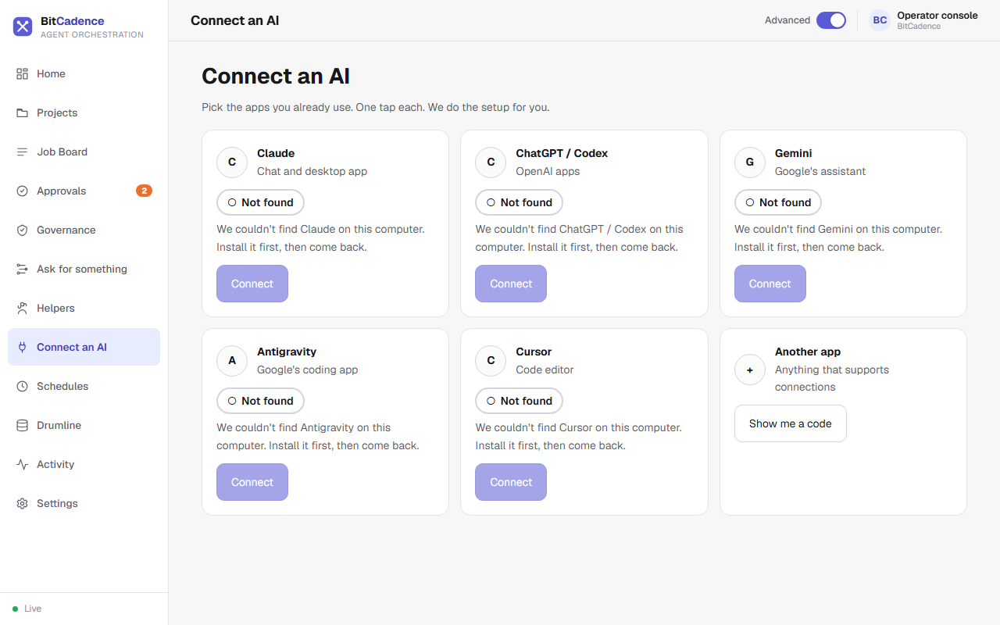

Connect an AI
Open /console and choose Connect an AI, or run bitcadence connect in a
terminal. Both do the same thing: find the app on this computer and add
BitCadence to its connection settings. You never edit a file.
In the browser, the target is the gateway computer, whose host is shown on the page. A remote browser does not configure apps on its own laptop. Send a test checks the configuration/executable path; it does not prove a completed live MCP/job interaction.

The screenshot is from a computer with none of these apps installed, so every card says Not found. On your computer, a card for an app that is installed has a Connect button you can tap.
$ bitcadence connect claude
I'll add BitCadence to Claude's settings (a backup is kept).
Go ahead? [Y/n]
Connected. Restart Claude to see it.
Apps
| Say | App |
|---|---|
claude |
Claude (chat and desktop app) |
codex |
ChatGPT / Codex |
gemini |
Gemini |
antigravity |
Antigravity |
cursor |
Cursor |
other |
Any other app: shows a code you can copy |
bitcadence connect alone shows a pick list. In the console each app has one
Connect button, a Connected / Not connected / Not found word with
a shape (never colour alone), and, once connected, Send a test and
Disconnect.
Safe by design
- The original settings file is copied to a
.bakfirst. The first backup is never overwritten, so repeating connect and disconnect keeps your original. - A settings file we can't read is left alone, with a plain message.
- Other servers and settings in the file are kept as they were.
- Connecting twice changes nothing.
bitcadence connect claude --disconnectremoves only BitCadence. bitcadence connect claude --test(or Send a test) checks that the setting is in place and the program it starts exists. Close and reopen the app once.
If the app isn't installed: I couldn't find Gemini on this computer. Install it, then run: bitcadence connect gemini.
The console uses /api/connect-ai (list, /{app}/connect, /{app}/disconnect,
/{app}/test). It returns app names and plain sentences only, never a file path
or a sign-in.